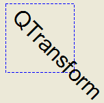

QTransform¶
Synopsis¶
Functions¶
- def
__add__(, n) - def
__div__(, n) - def
__eq__(arg__1) - def
__iadd__(div) - def
__idiv__(div) - def
__imul__(arg__1) - def
__imul__(div) - def
__isub__(div) - def
__mul__(, n) - def
__mul__(o) - def
__ne__(arg__1) - def
__reduce__() - def
__repr__() - def
__sub__(, n) - def
adjoint() - def
det() - def
determinant() - def
dx() - def
dy() - def
inverted() - def
isAffine() - def
isIdentity() - def
isInvertible() - def
isRotating() - def
isScaling() - def
isTranslating() - def
m11() - def
m12() - def
m13() - def
m21() - def
m22() - def
m23() - def
m31() - def
m32() - def
m33() - def
map(a) - def
map(a) - def
map(l) - def
map(l) - def
map(p) - def
map(p) - def
map(p) - def
map(r) - def
map(x, y) - def
mapRect(arg__1) - def
mapRect(arg__1) - def
mapToPolygon(r) - def
quadToQuad(arg__1, arg__2) - def
quadToSquare(arg__1) - def
reset() - def
rotate(a[, axis=Qt.ZAxis]) - def
rotateRadians(a[, axis=Qt.ZAxis]) - def
scale(sx, sy) - def
setMatrix(m11, m12, m13, m21, m22, m23, m31, m32, m33) - def
shear(sh, sv) - def
squareToQuad(arg__1) - def
toAffine() - def
translate(dx, dy) - def
transposed() - def
type()
Static functions¶
- def
fromScale(dx, dy) - def
fromTranslate(dx, dy) - def
quadToQuad(one, two, result) - def
quadToSquare(quad, result) - def
squareToQuad(square, result)
Detailed Description¶
The
PySide2.QtGui.QTransformclass specifies 2D transformations of a coordinate system.A transformation specifies how to translate, scale, shear, rotate or project the coordinate system, and is typically used when rendering graphics.
PySide2.QtGui.QTransformdiffers fromPySide2.QtGui.QMatrixin that it is a true 3x3 matrix, allowing perspective transformations.PySide2.QtGui.QTransform‘sPySide2.QtGui.QTransform.toAffine()method allows castingPySide2.QtGui.QTransformtoPySide2.QtGui.QMatrix. If a perspective transformation has been specified on the matrix, then the conversion will cause loss of data.
PySide2.QtGui.QTransformis the recommended transformation class in Qt.A
PySide2.QtGui.QTransformobject can be built using thePySide2.QtGui.QTransform.setMatrix(),PySide2.QtGui.QTransform.scale(),PySide2.QtGui.QTransform.rotate(),PySide2.QtGui.QTransform.translate()andPySide2.QtGui.QTransform.shear()functions. Alternatively, it can be built by applyingbasic matrix operations. The matrix can also be defined when constructed, and it can be reset to the identity matrix (the default) using thePySide2.QtGui.QTransform.reset()function.The
PySide2.QtGui.QTransformclass supports mapping of graphic primitives: A given point, line, polygon, region, or painter path can be mapped to the coordinate system defined by this matrix using thePySide2.QtGui.QTransform.map()function. In case of a rectangle, its coordinates can be transformed using thePySide2.QtGui.QTransform.mapRect()function. A rectangle can also be transformed into a polygon (mapped to the coordinate system defined by this matrix), using thePySide2.QtGui.QTransform.mapToPolygon()function.
PySide2.QtGui.QTransformprovides thePySide2.QtGui.QTransform.isIdentity()function which returnstrueif the matrix is the identity matrix, and thePySide2.QtGui.QTransform.isInvertible()function which returnstrueif the matrix is non-singular (i.e. AB = BA = I). ThePySide2.QtGui.QTransform.inverted()function returns an inverted copy of this matrix if it is invertible (otherwise it returns the identity matrix), andPySide2.QtGui.QTransform.adjoint()returns the matrix’s classical adjoint. In addition,PySide2.QtGui.QTransformprovides thePySide2.QtGui.QTransform.determinant()function which returns the matrix’s determinant.Finally, the
PySide2.QtGui.QTransformclass supports matrix multiplication, addition and subtraction, and objects of the class can be streamed as well as compared.
Rendering Graphics¶
When rendering graphics, the matrix defines the transformations but the actual transformation is performed by the drawing routines in
PySide2.QtGui.QPainter.By default,
PySide2.QtGui.QPainteroperates on the associated device’s own coordinate system. The standard coordinate system of aPySide2.QtGui.QPaintDevicehas its origin located at the top-left position. The x values increase to the right; y values increase downward. For a complete description, see the coordinate system documentation.
PySide2.QtGui.QPainterhas functions to translate, scale, shear and rotate the coordinate system without using aPySide2.QtGui.QTransform. For example:
 Although these functions are very convenient, it can be more efficient to build a
PySide2.QtGui.QTransformand callQPainter.setTransform()if you want to perform more than a single transform operation. For example:

Basic Matrix Operations¶

A
PySide2.QtGui.QTransformobject contains a 3 x 3 matrix. Them31(dx) andm32(dy) elements specify horizontal and vertical translation. Them11andm22elements specify horizontal and vertical scaling. Them21andm12elements specify horizontal and vertical shearing . And finally, them13andm23elements specify horizontal and vertical projection, withm33as an additional projection factor.
PySide2.QtGui.QTransformtransforms a point in the plane to another point using the following formulas:x' = m11*x + m21*y + dx y' = m22*y + m12*x + dy if is not affine: w' = m13*x + m23*y + m33 x' /= w' y' /= w'The point (x, y) is the original point, and (x’, y’) is the transformed point. (x’, y’) can be transformed back to (x, y) by performing the same operation on the
PySide2.QtGui.QTransform.inverted()matrix.The various matrix elements can be set when constructing the matrix, or by using the
PySide2.QtGui.QTransform.setMatrix()function later on. They can also be manipulated using thePySide2.QtGui.QTransform.translate(),PySide2.QtGui.QTransform.rotate(),PySide2.QtGui.QTransform.scale()andPySide2.QtGui.QTransform.shear()convenience functions. The currently set values can be retrieved using thePySide2.QtGui.QTransform.m11(),PySide2.QtGui.QTransform.m12(),PySide2.QtGui.QTransform.m13(),PySide2.QtGui.QTransform.m21(),PySide2.QtGui.QTransform.m22(),PySide2.QtGui.QTransform.m23(),PySide2.QtGui.QTransform.m31(),PySide2.QtGui.QTransform.m32(),PySide2.QtGui.QTransform.m33(),PySide2.QtGui.QTransform.dx()andPySide2.QtGui.QTransform.dy()functions.Translation is the simplest transformation. Setting
dxanddywill move the coordinate systemdxunits along the X axis anddyunits along the Y axis. Scaling can be done by settingm11andm22. For example, settingm11to 2 andm22to 1.5 will double the height and increase the width by 50%. The identity matrix hasm11,m22, andm33set to 1 (all others are set to 0) mapping a point to itself. Shearing is controlled bym12andm21. Setting these elements to values different from zero will twist the coordinate system. Rotation is achieved by setting both the shearing factors and the scaling factors. Perspective transformation is achieved by setting both the projection factors and the scaling factors.Here’s the combined transformations example using basic matrix operations:

-
class
PySide2.QtGui.QTransform¶ -
class
PySide2.QtGui.QTransform(mtx) -
class
PySide2.QtGui.QTransform(other) -
class
PySide2.QtGui.QTransform(h11, h12, h13, h21, h22, h23, h31, h32[, h33=1.0]) -
class
PySide2.QtGui.QTransform(h11, h12, h21, h22, dx, dy) Parameters: - h23 –
PySide2.QtCore.qreal - h11 –
PySide2.QtCore.qreal - h12 –
PySide2.QtCore.qreal - h31 –
PySide2.QtCore.qreal - mtx –
PySide2.QtGui.QMatrix - other –
PySide2.QtGui.QTransform - h22 –
PySide2.QtCore.qreal - h21 –
PySide2.QtCore.qreal - h32 –
PySide2.QtCore.qreal - h33 –
PySide2.QtCore.qreal - h13 –
PySide2.QtCore.qreal - dx –
PySide2.QtCore.qreal - dy –
PySide2.QtCore.qreal
Constructs an identity matrix.
All elements are set to zero except
m11andm22(specifying the scale) andm33which are set to 1.See also
Constructs a matrix that is a copy of the given
matrix. Note that them13,m23, andm33elements are set to 0, 0, and 1 respectively.Constructs a matrix with the elements,
m11,m12,m13,m21,m22,m23,m31,m32,m33.See also
Constructs a matrix with the elements,
m11,m12,m21,m22,dxanddy.See also
- h23 –
-
PySide2.QtGui.QTransform.TransformationType¶ Constant Description QTransform.TxNone QTransform.TxTranslate QTransform.TxScale QTransform.TxRotate QTransform.TxShear QTransform.TxProject
-
PySide2.QtGui.QTransform.__reduce__()¶ Return type: PyObject
-
PySide2.QtGui.QTransform.__repr__()¶ Return type: PyObject
-
PySide2.QtGui.QTransform.adjoint()¶ Return type: PySide2.QtGui.QTransformReturns the adjoint of this matrix.
-
PySide2.QtGui.QTransform.det()¶ Return type: PySide2.QtCore.qrealReturns the matrix’s determinant. Use
PySide2.QtGui.QTransform.determinant()instead.
-
PySide2.QtGui.QTransform.determinant()¶ Return type: PySide2.QtCore.qrealReturns the matrix’s determinant.
-
PySide2.QtGui.QTransform.dx()¶ Return type: PySide2.QtCore.qrealReturns the horizontal translation factor.
See also
PySide2.QtGui.QTransform.m31()PySide2.QtGui.QTransform.translate()Basic Matrix Operations
-
PySide2.QtGui.QTransform.dy()¶ Return type: PySide2.QtCore.qrealReturns the vertical translation factor.
See also
PySide2.QtGui.QTransform.translate()Basic Matrix Operations
-
static
PySide2.QtGui.QTransform.fromScale(dx, dy)¶ Parameters: - dx –
PySide2.QtCore.qreal - dy –
PySide2.QtCore.qreal
Return type: Creates a matrix which corresponds to a scaling of
sxhorizontally andsyvertically. This is the same asPySide2.QtGui.QTransform.QTransform().scale(sx, sy) but slightly faster.- dx –
-
static
PySide2.QtGui.QTransform.fromTranslate(dx, dy)¶ Parameters: - dx –
PySide2.QtCore.qreal - dy –
PySide2.QtCore.qreal
Return type: Creates a matrix which corresponds to a translation of
dxalong the x axis anddyalong the y axis. This is the same asPySide2.QtGui.QTransform.QTransform().translate(dx, dy) but slightly faster.- dx –
-
PySide2.QtGui.QTransform.inverted()¶ Return type: PyTuple Returns an inverted copy of this matrix.
If the matrix is singular (not invertible), the returned matrix is the identity matrix. If
invertibleis valid (i.e. not 0), its value is set to true if the matrix is invertible, otherwise it is set to false.
-
PySide2.QtGui.QTransform.isAffine()¶ Return type: PySide2.QtCore.boolReturns
trueif the matrix represent an affine transformation, otherwise returnsfalse.
-
PySide2.QtGui.QTransform.isIdentity()¶ Return type: PySide2.QtCore.boolReturns
trueif the matrix is the identity matrix, otherwise returnsfalse.See also
-
PySide2.QtGui.QTransform.isInvertible()¶ Return type: PySide2.QtCore.boolReturns
trueif the matrix is invertible, otherwise returnsfalse.See also
-
PySide2.QtGui.QTransform.isRotating()¶ Return type: PySide2.QtCore.boolReturns
trueif the matrix represents some kind of a rotating transformation, otherwise returnsfalse.Note
A rotation transformation of 180 degrees and/or 360 degrees is treated as a scaling transformation.
See also
-
PySide2.QtGui.QTransform.isScaling()¶ Return type: PySide2.QtCore.boolReturns
trueif the matrix represents a scaling transformation, otherwise returnsfalse.See also
-
PySide2.QtGui.QTransform.isTranslating()¶ Return type: PySide2.QtCore.boolReturns
trueif the matrix represents a translating transformation, otherwise returnsfalse.See also
-
PySide2.QtGui.QTransform.m11()¶ Return type: PySide2.QtCore.qrealReturns the horizontal scaling factor.
See also
PySide2.QtGui.QTransform.scale()Basic Matrix Operations
-
PySide2.QtGui.QTransform.m12()¶ Return type: PySide2.QtCore.qrealReturns the vertical shearing factor.
See also
PySide2.QtGui.QTransform.shear()Basic Matrix Operations
-
PySide2.QtGui.QTransform.m13()¶ Return type: PySide2.QtCore.qrealReturns the horizontal projection factor.
See also
PySide2.QtGui.QTransform.translate()Basic Matrix Operations
-
PySide2.QtGui.QTransform.m21()¶ Return type: PySide2.QtCore.qrealReturns the horizontal shearing factor.
See also
PySide2.QtGui.QTransform.shear()Basic Matrix Operations
-
PySide2.QtGui.QTransform.m22()¶ Return type: PySide2.QtCore.qrealReturns the vertical scaling factor.
See also
PySide2.QtGui.QTransform.scale()Basic Matrix Operations
-
PySide2.QtGui.QTransform.m23()¶ Return type: PySide2.QtCore.qrealReturns the vertical projection factor.
See also
PySide2.QtGui.QTransform.translate()Basic Matrix Operations
-
PySide2.QtGui.QTransform.m31()¶ Return type: PySide2.QtCore.qrealReturns the horizontal translation factor.
See also
PySide2.QtGui.QTransform.dx()PySide2.QtGui.QTransform.translate()Basic Matrix Operations
-
PySide2.QtGui.QTransform.m32()¶ Return type: PySide2.QtCore.qrealReturns the vertical translation factor.
See also
PySide2.QtGui.QTransform.dy()PySide2.QtGui.QTransform.translate()Basic Matrix Operations
-
PySide2.QtGui.QTransform.m33()¶ Return type: PySide2.QtCore.qrealReturns the division factor.
See also
PySide2.QtGui.QTransform.translate()Basic Matrix Operations
-
PySide2.QtGui.QTransform.map(r)¶ Parameters: r – PySide2.QtGui.QRegionReturn type: PySide2.QtGui.QRegionThis is an overloaded function.
Creates and returns a
PySide2.QtGui.QRegionobject that is a copy of the givenregion, mapped into the coordinate system defined by this matrix.Calling this method can be rather expensive if rotations or shearing are used.
-
PySide2.QtGui.QTransform.map(x, y) Parameters: - x –
PySide2.QtCore.qreal - y –
PySide2.QtCore.qreal
Maps the given coordinates
xandyinto the coordinate system defined by this matrix. The resulting values are put in *``tx`` and *``ty`` , respectively.The coordinates are transformed using the following formulas:
x' = m11*x + m21*y + dx y' = m22*y + m12*x + dy if is not affine: w' = m13*x + m23*y + m33 x' /= w' y' /= w'
The point (x, y) is the original point, and (x’, y’) is the transformed point.
See also
Basic Matrix Operations- x –
-
PySide2.QtGui.QTransform.map(a) Parameters: a – PySide2.QtGui.QPolygonReturn type: PySide2.QtGui.QPolygonThis is an overloaded function.
Creates and returns a
PySide2.QtGui.QPolygonobject that is a copy of the givenpolygon, mapped into the coordinate system defined by this matrix. Note that the transformed coordinates are rounded to the nearest integer.
-
PySide2.QtGui.QTransform.map(a) Parameters: a – PySide2.QtGui.QPolygonFReturn type: PySide2.QtGui.QPolygonFThis is an overloaded function.
Creates and returns a
PySide2.QtGui.QPolygonFobject that is a copy of the givenpolygon, mapped into the coordinate system defined by this matrix.
-
PySide2.QtGui.QTransform.map(l) Parameters: l – PySide2.QtCore.QLineReturn type: PySide2.QtCore.QLineThis is an overloaded function.
Creates and returns a
PySide2.QtCore.QLineFobject that is a copy of the given line,l, mapped into the coordinate system defined by this matrix.
-
PySide2.QtGui.QTransform.map(l) Parameters: l – PySide2.QtCore.QLineFReturn type: PySide2.QtCore.QLineFThis is an overloaded function.
Creates and returns a
PySide2.QtCore.QLineobject that is a copy of the givenline, mapped into the coordinate system defined by this matrix. Note that the transformed coordinates are rounded to the nearest integer.
-
PySide2.QtGui.QTransform.map(p) Parameters: p – PySide2.QtCore.QPointFReturn type: PySide2.QtCore.QPointFThis is an overloaded function.
Creates and returns a
PySide2.QtCore.QPointFobject that is a copy of the given point,p, mapped into the coordinate system defined by this matrix.
-
PySide2.QtGui.QTransform.map(p) Parameters: p – PySide2.QtGui.QPainterPathReturn type: PySide2.QtGui.QPainterPathThis is an overloaded function.
Creates and returns a
PySide2.QtGui.QPainterPathobject that is a copy of the givenpath, mapped into the coordinate system defined by this matrix.
-
PySide2.QtGui.QTransform.map(p) Parameters: p – PySide2.QtCore.QPointReturn type: PySide2.QtCore.QPointThis is an overloaded function.
Creates and returns a
PySide2.QtCore.QPointobject that is a copy of the givenpoint, mapped into the coordinate system defined by this matrix. Note that the transformed coordinates are rounded to the nearest integer.
-
PySide2.QtGui.QTransform.mapRect(arg__1)¶ Parameters: arg__1 – PySide2.QtCore.QRectFReturn type: PySide2.QtCore.QRectFCreates and returns a
PySide2.QtCore.QRectFobject that is a copy of the givenrectangle, mapped into the coordinate system defined by this matrix.The rectangle’s coordinates are transformed using the following formulas:
x' = m11*x + m21*y + dx y' = m22*y + m12*x + dy if is not affine: w' = m13*x + m23*y + m33 x' /= w' y' /= w'
If rotation or shearing has been specified, this function returns the bounding rectangle. To retrieve the exact region the given
rectanglemaps to, use thePySide2.QtGui.QTransform.mapToPolygon()function instead.See also
PySide2.QtGui.QTransform.mapToPolygon()Basic Matrix Operations
-
PySide2.QtGui.QTransform.mapRect(arg__1) Parameters: arg__1 – PySide2.QtCore.QRectReturn type: PySide2.QtCore.QRectThis is an overloaded function.
Creates and returns a
PySide2.QtCore.QRectobject that is a copy of the givenrectangle, mapped into the coordinate system defined by this matrix. Note that the transformed coordinates are rounded to the nearest integer.
-
PySide2.QtGui.QTransform.mapToPolygon(r)¶ Parameters: r – PySide2.QtCore.QRectReturn type: PySide2.QtGui.QPolygonCreates and returns a
PySide2.QtGui.QPolygonrepresentation of the givenrectangle, mapped into the coordinate system defined by this matrix.The rectangle’s coordinates are transformed using the following formulas:
x' = m11*x + m21*y + dx y' = m22*y + m12*x + dy if is not affine: w' = m13*x + m23*y + m33 x' /= w' y' /= w'
Polygons and rectangles behave slightly differently when transformed (due to integer rounding), so
matrix.map(QPolygon(rectangle))is not always the same asmatrix.mapToPolygon(rectangle).See also
PySide2.QtGui.QTransform.mapRect()Basic Matrix Operations
-
PySide2.QtGui.QTransform.__ne__(arg__1)¶ Parameters: arg__1 – PySide2.QtGui.QTransformReturn type: PySide2.QtCore.boolReturns
trueif this matrix is not equal to the givenmatrix, otherwise returnsfalse.
-
PySide2.QtGui.QTransform.__mul__(n)¶ Parameters: n – PySide2.QtCore.qrealReturn type: PySide2.QtGui.QTransform
-
PySide2.QtGui.QTransform.__mul__(o) Parameters: o – PySide2.QtGui.QTransformReturn type: PySide2.QtGui.QTransformReturns the result of multiplying this matrix by the given
matrix.Note that matrix multiplication is not commutative, i.e. a*b != b*a.
-
PySide2.QtGui.QTransform.__imul__(div)¶ Parameters: div – PySide2.QtCore.qrealReturn type: PySide2.QtGui.QTransformThis is an overloaded function.
Returns the result of performing an element-wise multiplication of this matrix with the given
scalar.
-
PySide2.QtGui.QTransform.__imul__(arg__1) Parameters: arg__1 – PySide2.QtGui.QTransformReturn type: PySide2.QtGui.QTransformThis is an overloaded function.
Returns the result of multiplying this matrix by the given
matrix.
-
PySide2.QtGui.QTransform.__add__(n)¶ Parameters: n – PySide2.QtCore.qrealReturn type: PySide2.QtGui.QTransform
-
PySide2.QtGui.QTransform.__iadd__(div)¶ Parameters: div – PySide2.QtCore.qrealReturn type: PySide2.QtGui.QTransformThis is an overloaded function.
Returns the matrix obtained by adding the given
scalarto each element of this matrix.
-
PySide2.QtGui.QTransform.__sub__(n)¶ Parameters: n – PySide2.QtCore.qrealReturn type: PySide2.QtGui.QTransform
-
PySide2.QtGui.QTransform.__isub__(div)¶ Parameters: div – PySide2.QtCore.qrealReturn type: PySide2.QtGui.QTransformThis is an overloaded function.
Returns the matrix obtained by subtracting the given
scalarfrom each element of this matrix.
-
PySide2.QtGui.QTransform.__div__(n)¶ Parameters: n – PySide2.QtCore.qrealReturn type: PySide2.QtGui.QTransform
-
PySide2.QtGui.QTransform.__idiv__(div)¶ Parameters: div – PySide2.QtCore.qrealReturn type: PySide2.QtGui.QTransformThis is an overloaded function.
Returns the result of performing an element-wise division of this matrix by the given
scalar.
-
PySide2.QtGui.QTransform.__eq__(arg__1)¶ Parameters: arg__1 – PySide2.QtGui.QTransformReturn type: PySide2.QtCore.boolReturns
trueif this matrix is equal to the givenmatrix, otherwise returnsfalse.
-
static
PySide2.QtGui.QTransform.quadToQuad(one, two, result)¶ Parameters: - one –
PySide2.QtGui.QPolygonF - two –
PySide2.QtGui.QPolygonF - result –
PySide2.QtGui.QTransform
Return type: PySide2.QtCore.boolCreates a transformation matrix,
trans, that maps a four-sided polygon,one, to another four-sided polygon,two. Returnstrueif the transformation is possible; otherwise returns false.This is a convenience method combining
PySide2.QtGui.QTransform.quadToSquare()andPySide2.QtGui.QTransform.squareToQuad()methods. It allows the input quad to be transformed into any other quad.- one –
-
PySide2.QtGui.QTransform.quadToQuad(arg__1, arg__2) Parameters: - arg__1 –
PySide2.QtGui.QPolygonF - arg__2 –
PySide2.QtGui.QPolygonF
Return type: PyObject- arg__1 –
-
static
PySide2.QtGui.QTransform.quadToSquare(quad, result)¶ Parameters: - quad –
PySide2.QtGui.QPolygonF - result –
PySide2.QtGui.QTransform
Return type: PySide2.QtCore.boolCreates a transformation matrix,
trans, that maps a four-sided polygon,quad, to a unit square. Returnstrueif the transformation is constructed or false if such a transformation does not exist.- quad –
-
PySide2.QtGui.QTransform.quadToSquare(arg__1) Parameters: arg__1 – PySide2.QtGui.QPolygonFReturn type: PyObject
-
PySide2.QtGui.QTransform.reset()¶ Resets the matrix to an identity matrix, i.e. all elements are set to zero, except
m11andm22(specifying the scale) andm33which are set to 1.See also
PySide2.QtGui.QTransform.QTransform()PySide2.QtGui.QTransform.isIdentity()Basic Matrix Operations
-
PySide2.QtGui.QTransform.rotate(a[, axis=Qt.ZAxis])¶ Parameters: - a –
PySide2.QtCore.qreal - axis –
PySide2.QtCore.Qt.Axis
Return type: Rotates the coordinate system counterclockwise by the given
angleabout the specifiedaxisand returns a reference to the matrix.Note that if you apply a
PySide2.QtGui.QTransformto a point defined in widget coordinates, the direction of the rotation will be clockwise because the y-axis points downwards.The angle is specified in degrees.
See also
- a –
-
PySide2.QtGui.QTransform.rotateRadians(a[, axis=Qt.ZAxis])¶ Parameters: - a –
PySide2.QtCore.qreal - axis –
PySide2.QtCore.Qt.Axis
Return type: Rotates the coordinate system counterclockwise by the given
angleabout the specifiedaxisand returns a reference to the matrix.Note that if you apply a
PySide2.QtGui.QTransformto a point defined in widget coordinates, the direction of the rotation will be clockwise because the y-axis points downwards.The angle is specified in radians.
See also
- a –
-
PySide2.QtGui.QTransform.scale(sx, sy)¶ Parameters: - sx –
PySide2.QtCore.qreal - sy –
PySide2.QtCore.qreal
Return type: Scales the coordinate system by
sxhorizontally andsyvertically, and returns a reference to the matrix.See also
- sx –
-
PySide2.QtGui.QTransform.setMatrix(m11, m12, m13, m21, m22, m23, m31, m32, m33)¶ Parameters: - m11 –
PySide2.QtCore.qreal - m12 –
PySide2.QtCore.qreal - m13 –
PySide2.QtCore.qreal - m21 –
PySide2.QtCore.qreal - m22 –
PySide2.QtCore.qreal - m23 –
PySide2.QtCore.qreal - m31 –
PySide2.QtCore.qreal - m32 –
PySide2.QtCore.qreal - m33 –
PySide2.QtCore.qreal
Sets the matrix elements to the specified values,
m11,m12,m13m21,m22,m23m31,m32andm33. Note that this function replaces the previous values.PySide2.QtGui.QTransformprovides thePySide2.QtGui.QTransform.translate(),PySide2.QtGui.QTransform.rotate(),PySide2.QtGui.QTransform.scale()andPySide2.QtGui.QTransform.shear()convenience functions to manipulate the various matrix elements based on the currently defined coordinate system.See also
PySide2.QtGui.QTransform.QTransform()- m11 –
-
PySide2.QtGui.QTransform.shear(sh, sv)¶ Parameters: - sh –
PySide2.QtCore.qreal - sv –
PySide2.QtCore.qreal
Return type: Shears the coordinate system by
shhorizontally andsvvertically, and returns a reference to the matrix.See also
- sh –
-
PySide2.QtGui.QTransform.squareToQuad(arg__1)¶ Parameters: arg__1 – PySide2.QtGui.QPolygonFReturn type: PyObject
-
static
PySide2.QtGui.QTransform.squareToQuad(square, result) Parameters: - square –
PySide2.QtGui.QPolygonF - result –
PySide2.QtGui.QTransform
Return type: PySide2.QtCore.boolCreates a transformation matrix,
trans, that maps a unit square to a four-sided polygon,quad. Returnstrueif the transformation is constructed or false if such a transformation does not exist.- square –
-
PySide2.QtGui.QTransform.toAffine()¶ Return type: PySide2.QtGui.QMatrixReturns the
PySide2.QtGui.QTransformas an affine matrix.Warning
If a perspective transformation has been specified, then the conversion will cause loss of data.
-
PySide2.QtGui.QTransform.translate(dx, dy)¶ Parameters: - dx –
PySide2.QtCore.qreal - dy –
PySide2.QtCore.qreal
Return type: Moves the coordinate system
dxalong the x axis anddyalong the y axis, and returns a reference to the matrix.See also
- dx –
-
PySide2.QtGui.QTransform.transposed()¶ Return type: PySide2.QtGui.QTransformReturns the transpose of this matrix.
-
PySide2.QtGui.QTransform.type()¶ Return type: PySide2.QtGui.QTransform.TransformationTypeReturns the transformation type of this matrix.
The transformation type is the highest enumeration value capturing all of the matrix’s transformations. For example, if the matrix both scales and shears, the type would be
TxShear, becauseTxShearhas a higher enumeration value thanTxScale.Knowing the transformation type of a matrix is useful for optimization: you can often handle specific types more optimally than handling the generic case.
© 2018 The Qt Company Ltd. Documentation contributions included herein are the copyrights of their respective owners. The documentation provided herein is licensed under the terms of the GNU Free Documentation License version 1.3 as published by the Free Software Foundation. Qt and respective logos are trademarks of The Qt Company Ltd. in Finland and/or other countries worldwide. All other trademarks are property of their respective owners.